지금 있는 기능이 어디로 가나요
메뉴를 셋으로 줄여도 기능을 버리는 게 아니에요. 대부분 쓰는 자리 옆으로 옮기고, 가끔 쓰는 것만 '안쪽'에 둬요.
'안쪽으로 숨기기'가 뭐냐면
오른쪽 위 내 동그라미(김)를 누르면 나오는 메뉴에 넣는다는 뜻이에요. 화면에는 안 보이지만, 필요할 때 두 번 누르면 닿아요.
하나씩 보기

다음 미팅 큰 카드 + 할 일. 연구 목적·방향은 빼고 온보딩에서만.
확정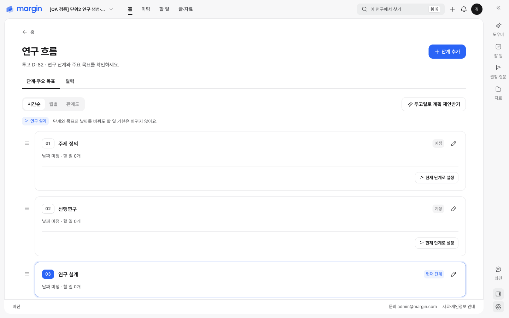
홈 맨 위 한 줄 단계 막대로. 달력은 미팅 목록 안에서.
단계 막대 확정 · 달력 위치 제안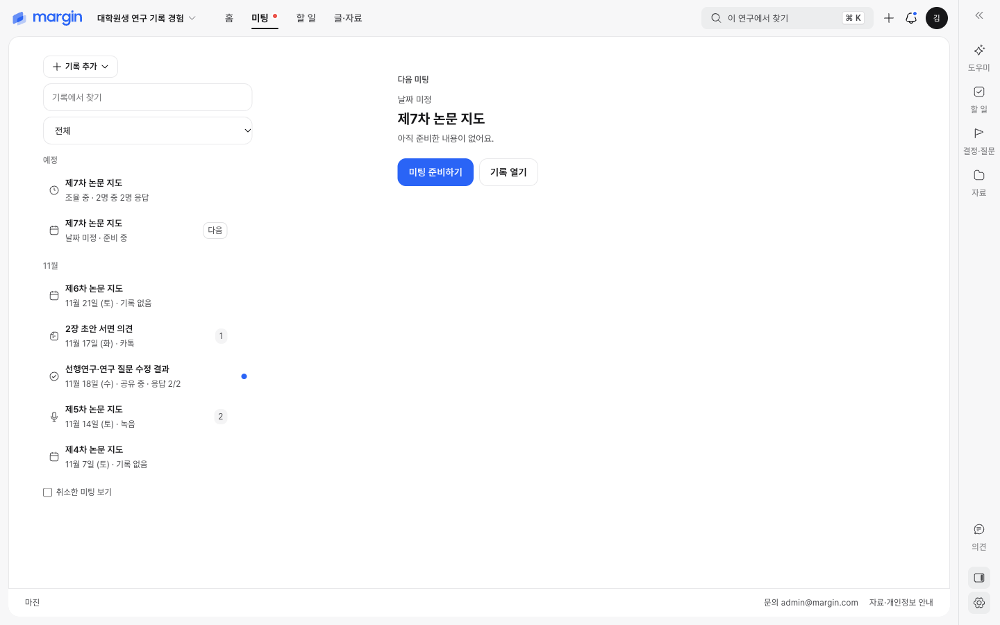
미팅 하나 = 한 페이지(준비 → 미팅 → 기록 → 정리).
확정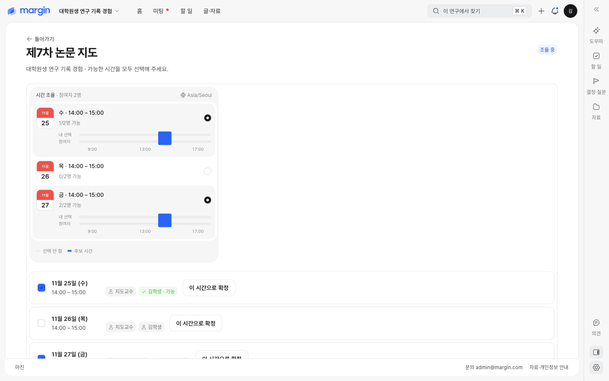
새 미팅 만들 때 '시간 정하기'로.
제안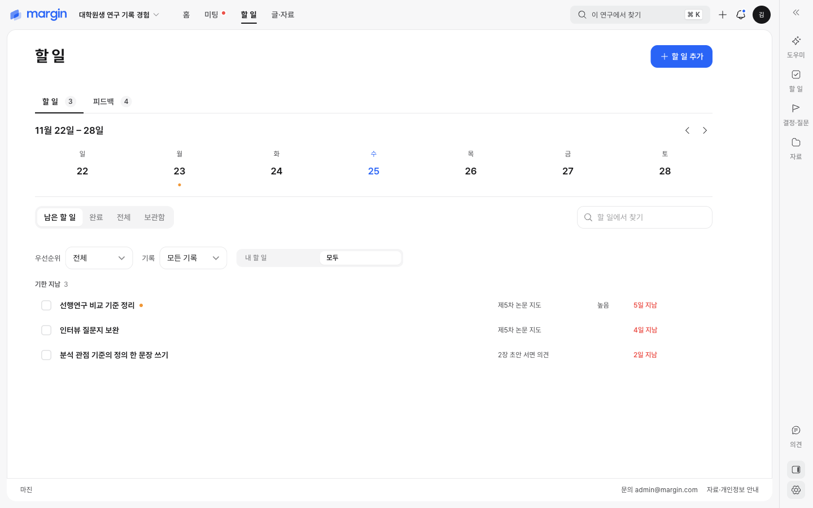
하나로 합침. 원고 문장에 붙은 건 원고 옆에도 보여요.
합치기 확정 · 원고 옆 표시 제안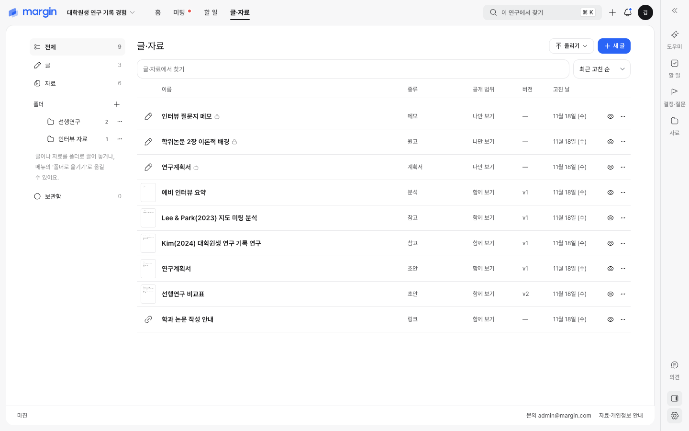
글은 원고로, PDF·파일은 원고 옆에서 펴 보는 자료로.
제안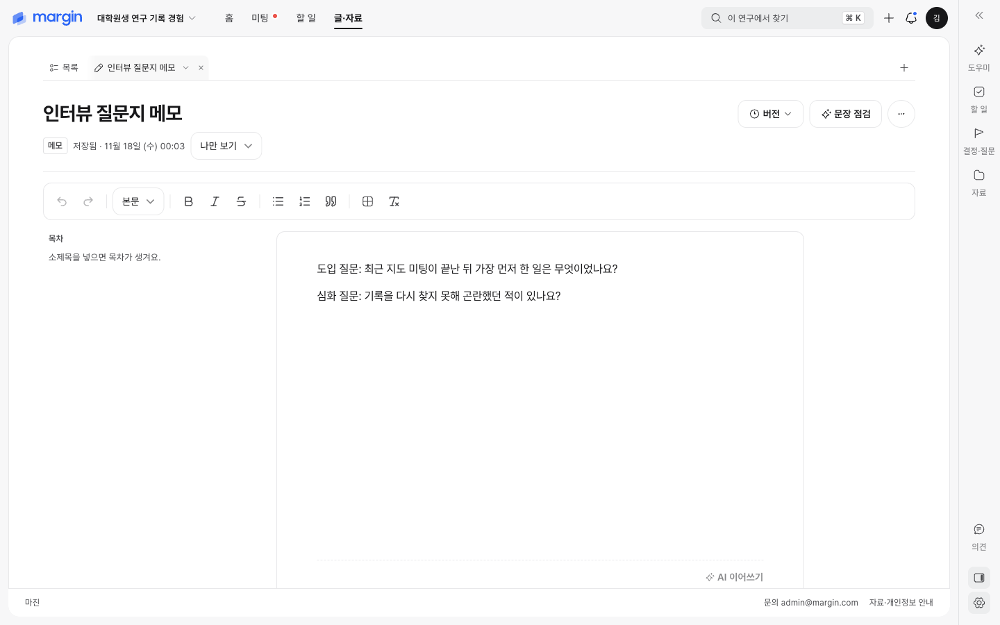
버전 → '이전 본 보기', 문장 점검 → 도우미에게 말로, 나만 보기 → 없앰.
제안
버튼 하나. '수정 결과'를 따로 만드는 단계는 없앰.
버튼 하나 확정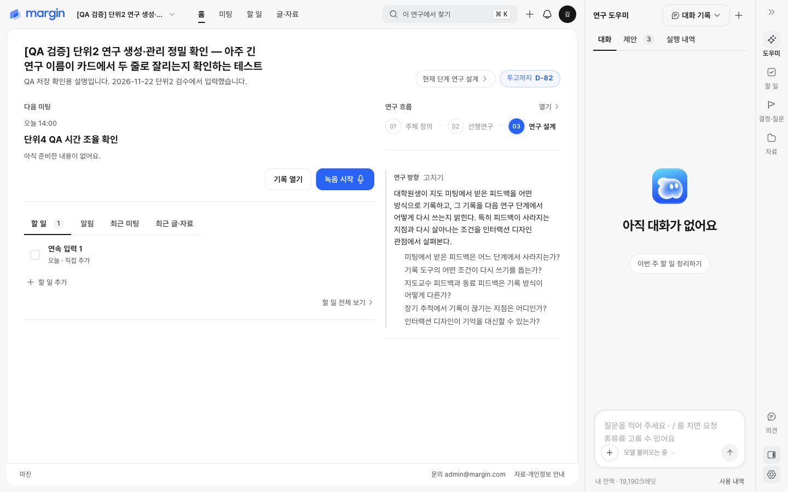
그대로 두되, 실행 기록 탭은 대화 안으로.
제안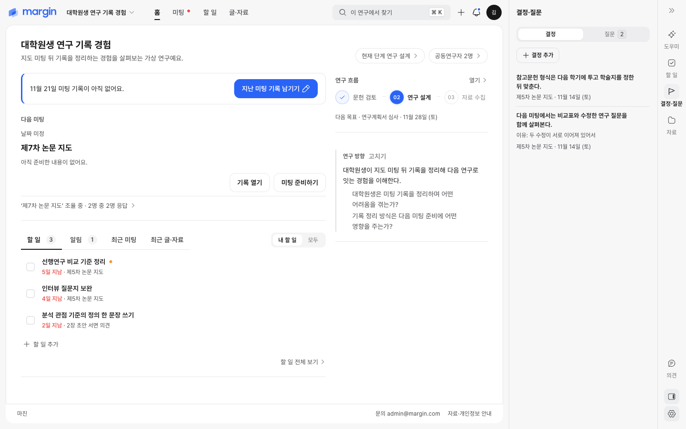
미팅 후 '결정'과 '여쭤볼 것'으로. 레일에서는 뺌.
제안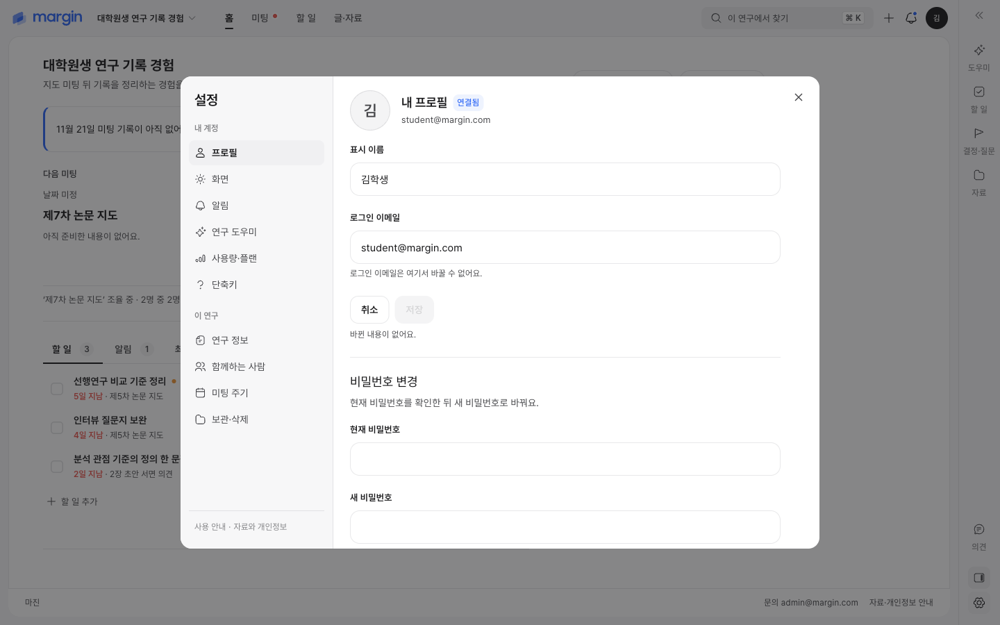
탭 10개 → 4묶음(나, 이 연구, 알림, 도우미). 단축키는 ? 키로.
제안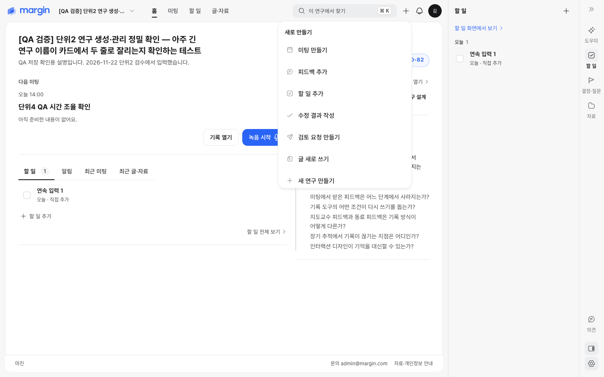
미팅은 미팅에서, 장은 원고에서 만들어요.
제안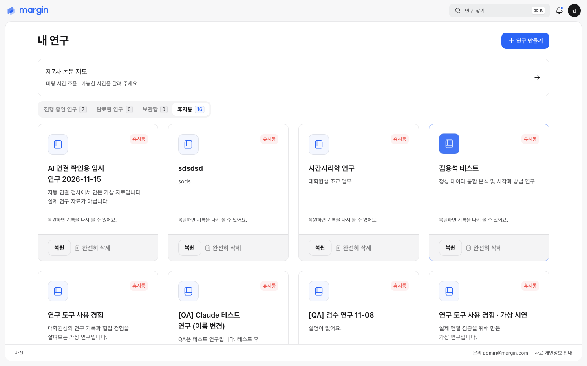
'다른 연구로 바꾸기'와 '휴지통'으로. 지우면 되돌리기 알림은 유지.
되돌리기 유지는 11-25 결정 · 위치 제안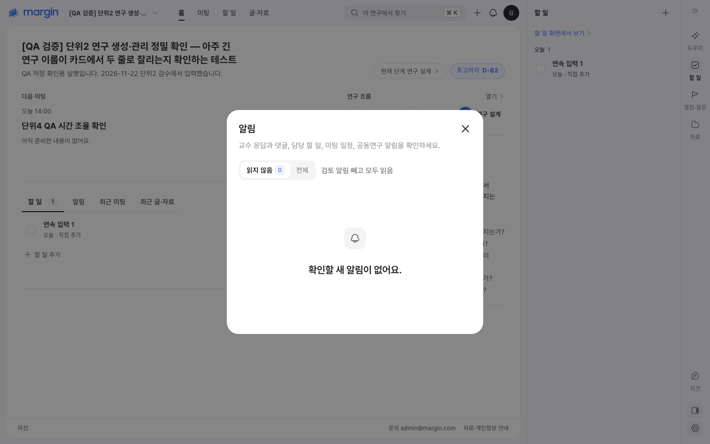
찾기는 유지. 알림은 '교수님이 열어 보심·답장' 위주로.
제안확정 = 이번에 말로 정하신 것, 11-25 결정 = 앞선 재평가 결정, 제안 = 제 안이에요. 바꾸고 싶은 줄을 말로 짚어 주시면 돼요.